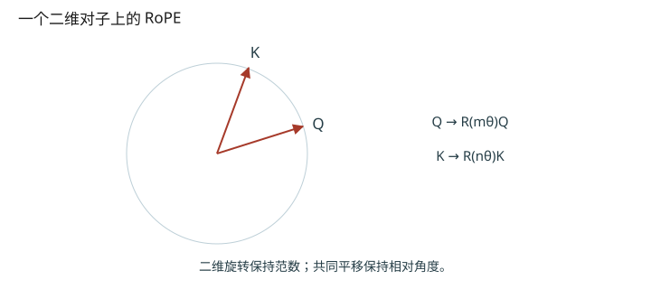
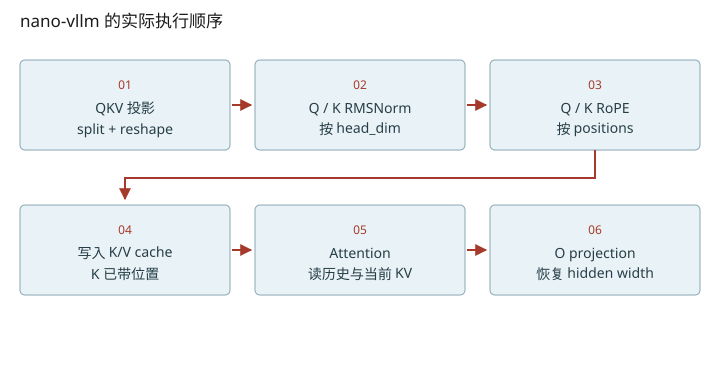

深入篇 19 / Transformer 逐步拆解 · 2026-11-08
RoPE：旋转的是向量，保留的是相对位置
手算一个二维旋转，并证明 Q/K 共同平移后点积为何不变。
手算一个二维旋转，并证明 Q/K 共同平移后点积为何不变。

先从两个数开始
[x₁,x₂] → [x₁cosφ−x₂sinφ, x₂cosφ+x₁sinφ]
取 [1,0]，旋转90°后是 [0,1]，长度仍为1。RoPE 对不同二维对子使用不同频率 θᵢ=base^(−2i/d)，位置 p 对应角度 pθᵢ。旋转发生在 Q/K 投影后，不是把位置整数直接加到 token ID 上。来源：RoFormer §3.2 与本地 rotary_embedding.py。
相对位置从哪来
= qᵀ R(mθ)ᵀ R(nθ) k
= qᵀ R((n−m)θ) k
把 m、n 同时加 Δ，只留下 n−m，所以同一对原始 q/k 的点积不变。这里是关于旋转算子的恒等式；不能直接推成“整模型在任何上下文下对平移完全不变”，因为 token 表示、上下文边界与训练分布也会改变。
实现细节：它不是相邻元素配对
本地 apply_rotary_emb 把最后一维切成两半：x1,x2=torch.chunk(x.float(),2,dim=-1)，再拼回结果。d=4 时配对为(0,2)、(1,3)，与某些教材的(0,1)、(2,3)写法布局不同；只要权重约定和算子一致就可以。不可照抄另一种布局而不做相应权重/维度变换。
Qwen3 的执行次序是 Q/K norm → RoPE → attention 写缓存；因此缓存中的 K 已经使用该 token 的绝对 positions。decode 时 positions=len(seq)−1，不能每步都从0开始，也不能把已旋转 K 再按新位置旋转一遍。cos/sin 表只是位置系数缓存，不是模型的 K/V cache。
把维度变化拆到每一步
- 本地RoPE把d切为两半再配对；d=4时是(0,2)、(1,3)。
- Q/K的数值改变，但token/head/每头维度都不变。

改变变量，验证直觉
启用 JavaScript 后可交互；上面的图和下面的手算练习始终可读。
数值练习：先算，再核对
令 θ=π/2，q=k=[1,0]，m=0、n=1，算出点积。再令 m=3、n=4，重新计算。运行 python labs/transformer_lab.py rope 查看半切布局和共同平移的数值误差。
闭卷检索
不要回看正文。答错后先解释原因，再重新打开这一课。
把结论落到源码
- 在 rotary_embedding.py 区分 cos_sin_cache 与 attention.k_cache。
- 在 Qwen3Attention.forward 标出 q_norm、rotary_emb、attn 的顺序，再追 prepare_decode 的 positions。
以下行号由本地 vendor 文件生成；上游链接固定完整 commit，离线摘录可直接打开。
- nano-rope：nanovllm/layers/rotary_embedding.py L6–50 · 上游证据
- nano-qkv：nanovllm/models/qwen3.py L14–91 · 上游证据
- nano-decode-inputs：nanovllm/engine/model_runner.py L172–188 · 上游证据
优先阅读：RoFormer §3.2.1–3.2.2。
速查：形状与公式 · 三框架映射 · 术语表 · 复习与实战路线 · 4070 Ti本地实验
只在当前浏览器保存自评；不会自动写成已掌握的 learning record。